win引导全解
一：原理与关系诠释
*UEFI 和 Legacy 是主板的两种“底层引导模式”*，它们决定了主板开机后如何识别硬盘并启动操作系统。
UEFI 与 Legacy 的核心区别
可以用老式按键机与现代智能机来类比它们：
| 特性 | Legacy (传统模式) | UEFI (现代模式) |
|---|---|---|
| 画面与操作 | 只能显示蓝底白字的简陋 BIOS 界面，只能用键盘操作。 | 支持高清图形界面，支持鼠标点击，甚至支持中文。 |
| 开机速度 | 慢。开机要逐个自检所有硬件，耗时长。 | 快。支持“秒级”快启，自检与系统引导同步进行。 |
| 搭配的硬盘分区表 | 必须搭配 MBR 格式（最大仅支持 2TB 硬盘，最多 4 个主分区）。 | 必须搭配 GPT 格式（支持 2TB 以上大硬盘，分区数量几乎无限制）。 |
| 安全机制 | 没有安全验证，容易在开机前被引导区病毒拦截。 | 带有 Secure Boot（安全启动），防止恶意软件篡改引导。 |
EFI 是“硬件和主板层面的规范”，而 BCD 是“Windows 操作系统层面的菜单配置数据库”。 在现代电脑中，它们是上下级合作关系。
[开机] -> 1. 主板加载 UEFI 固件 -> 2. 固件读取硬盘的 ESP 隐藏分区 -> 3. 执行微软的引导程序 (bootmgfw.efi) -> 4. 该程序读取 BCD 菜单 -> 5. 屏幕显示系统选择列表 -> [进入 PE/Windows]
因此利用 BCD 引导硬盘的 PE是最安全的，哪怕引导失败，也完全不用担心无法进原系统
bootx64.efi 是 UEFI 规范定义的“万能默认路标”，而 bootmgfw.efi 是微软 Windows 专属的“当家大堂经理”。
- 核心定义与区别
| 特性 | bootx64.efi (默认引导文件) | bootmgfw.efi (Windows 引导管理器) |
|---|---|---|
| 属于谁 | UEFI 国际标准规范（任何系统通用的命名规则）。 | 微软 Windows 系统专属（Windows Boot Manager）。 |
| 存放路径 | 固定的默认路径：\EFI\Boot\bootx64.efi |
微软专属路径：\EFI\Microsoft\Boot\bootmgfw.efi |
| 主要职责 | 当主板不知道该启动谁时，作为最后的保底备用路标。 | 负责读取 BCD 菜单，正式拉起 Windows 或 PE。 |
| 常见场景 | U 盘启动盘、光盘、或者是刚格式化完的空白硬盘。 | 已经安装好 Windows 的本地电脑 |
在微软的体系下，这两个文件在代码层面上其实是“双胞胎”，甚至是一模一样的同一个文件。但可以用第三方的bootx64.efi 替代掉微软那个做成efi万能引导
二：制作自定义引导PE
①bcd引导法，直接用本地硬盘启动PE进ramos
打开BOOTICE，按下面操作添加PE
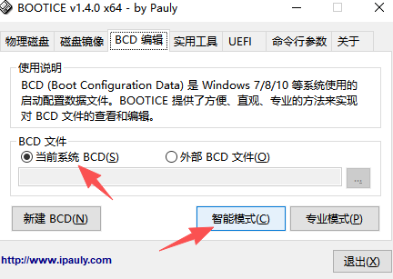
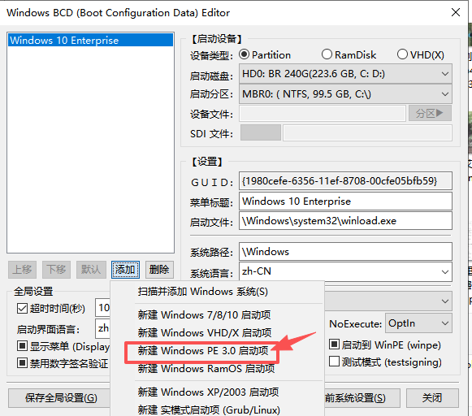
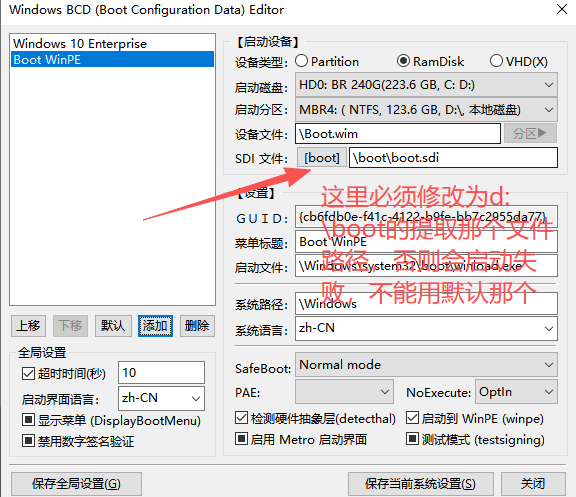
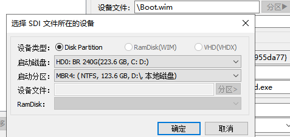
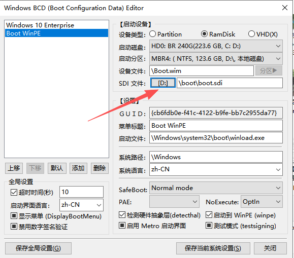
注意，上面的wim和sdi文件是直接从下载好的win10pe.iso文件装载后复制出来的，wim放D根目录，sdi需要放到d:\boot目录，添加好修改一下时间10s，其他地方不需要改动，默认即可，最后保存即可
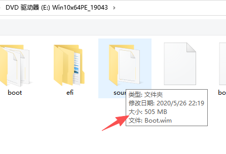
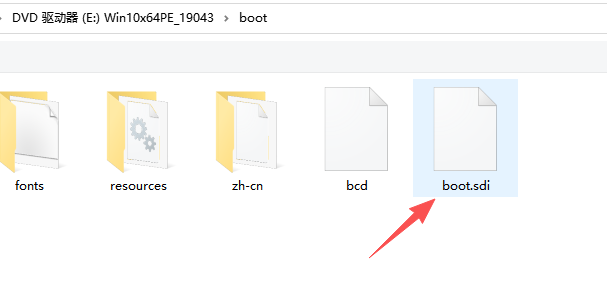
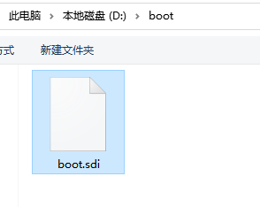
②UEFI模式（需要主板支持，旧的Legacy 模式主板，用boottice启动会这样）
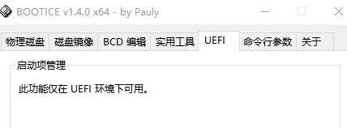
支持uefi的主板，直接点击修改启动序列，添加7mb那个bootx64.efi
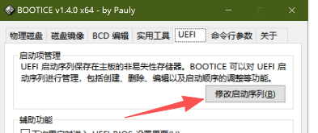
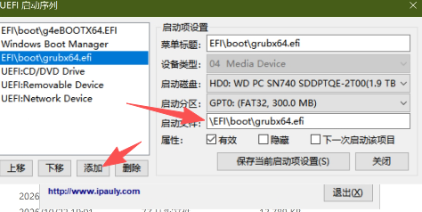
可以直接复制过去替换掉原来微信那个，然后上面添加指定，再设置为第一启动序列即可，这里的设置等同于进bios设置启动顺序
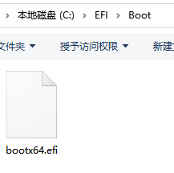
三，其他第三方引导
如Grub4dos、g4ebootx64.efi、grubx64.efi，都属于 第三方开源引导工具（GRUB 家族及其衍生版）。它们最大的特点是定制性极强、功能极度恐怖
（比如可以直接在开机时强行挂载并运行本地的 .iso、.img 甚至软盘镜像），这是微软自带的 BCD 引导绝对做不到的。做ramos目前最好的是g4ebootx64.efi
区别一览
| 引导文件名/工具 | 服务的底层环境 | 它的本质与核心定位 | 最大的绝活/特点 |
|---|---|---|---|
| Grub4dos | Legacy / MBR | 基于经典 GRUB 改造的 传统模式超级引导工具。 | 可以在不解压的前提下，直接仿真（Map）并启动本地的 .iso 镜像。 |
| g4ebootx64.efi | UEFI / GPT (64位) | Grub4dos 的 UEFI 现代移植版（官方命名为 Grub4dos for UEFI）。 | 继承了传统 Grub4dos 的直接加载 ISO 能力，但完美支持 UEFI 环境。 |
| grubx64.efi | UEFI / GPT (64位) | **GRUB2（标准第二代 Linux 引导）**的编译生成文件。 | Linux 系统的标准御用引导（如 Ubuntu），通常负责引导多系统。 |